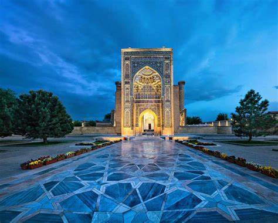
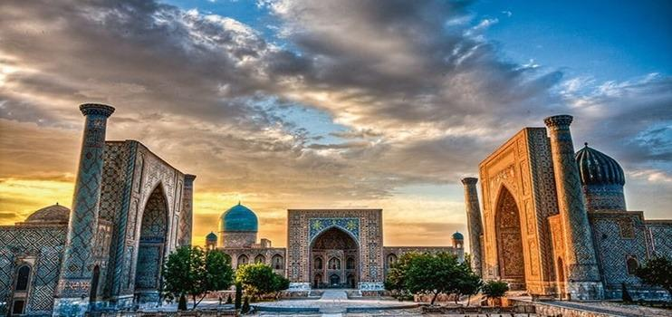
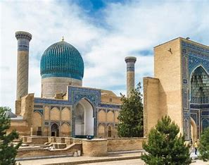

Welcome to Uzbekistan
Obuna bulishyangiliklar
-

sayohlar uchun qulayliklar
Koʻkaldosh madrasasi (Koʻkaltosh madrasasi) — Oʻzbekiston Respublikasi Buxoro viloyati Buxoro shahrining tarixiy markazida, Labihovuz ansamblining shimoli-sharqiy tomonida joylashgan 2 qavatli madrasa inshooti. Buxoro xonligining poytaxtida 1568/69-yilda Qulbobo koʻkaldosh tomonidan bunyod etilgan
- 
-

yangi binolar
uzbekiston syohot uchun Goʻri Amir Oʻrta Osiyo meʼmor-chiligining humoyun noyob asari sifatida eʼtirof etiladi. Maqbara qurilishi Amir Temur buyruʻgiga asosan 1403-yilda boshlanib, Mirzo Ulugʻbek davrida tugallangan hamda temuriylar xilxonasiga aylantirilgan. Maqbara, oʻrta asr Samarqandining janubiy-sharqiy qismida,